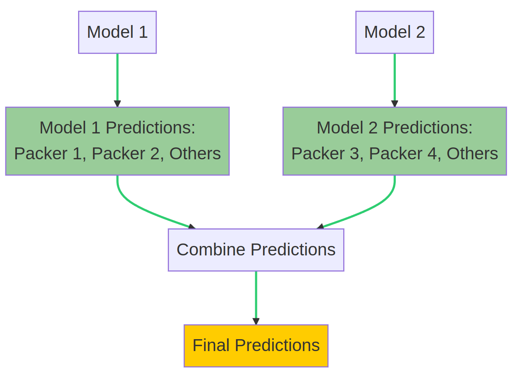

TLDR:
- Packed malware machine learning classifier can only previously identify 10 packers
- Solution was a customized version of model ensembling, which is to train multiple models and resolve their results
- It works with a slight caveat of more extended training and processing, which I could happily live with
I recently presented VGL4NT, my tool that uses machine learning to classify packed malware, at the Blackhat Middle East and Africa meetup. During my talk, I candidly shared one of the tool's limitations which is it can only identify 10 packers because of my hardware constraints. If I want it to be able to identify more, I need to get more GPU (which will be costly) or keep my money and come up with a clever solution. Well, this post is about the latter.
A Simple Solution
The solution I came up with isn't exactly original. It's based on Task Decomposition, which involves training separate models for different categories and combining their predictions. This way, I could double the classification capacity without requiring additional hardware resources.
This was implemented by creating multiple machine learning models, each specializing in recognizing a subset of packers. The real challenge, however, lies in combining the predictions from these models to form a unified output.

Here's how the process works:
The packed malware file is fed into Model 1, which outputs probabilities for Packer 1, Packer 2, and Others. For example, it might produce:
- Packer 1: 10%
- Packer 2: 20%
- Others: 70%
The same file is then fed into Model 2, which outputs probabilities for Packer 3, Packer 4, and Others. For instance:
- Packer 3: 60%
- Packer 4: 30%
- Others: 10%
I then take the 'Others' category with the lowest probability. For our example, the final 'Others' probability would be 10% from Model 2.
The final probabilities are:
- Packer 1: 10%
- Packer 2: 20%
- Packer 3: 60%
- Packer 4: 30%
- Others: 10%
Packer 3 has the highest probability in this example, and the file is classified as such.
This simple combination approach ensures I maintain a suitable probability distribution while leveraging each model's strengths. The beauty of this method is not only its efficiency but also its scalability. I can introduce more models, each specializing in different packers, to further increase the classification capabilities.
Now you might wonder why I'd even write about this if the solution is this simple. The funny thing is I've explored multiple approaches to unifying the output. Before this, I fully implemented a complicated approach, only to later realize while writing this blog post that a much simpler approach works well enough for the tool's purpose.
Downsides
I am conscious that this may or may not be the most effective method to tackle this problem. But what is essential is that the current computation is simple and can maintain the appropriate prediction distribution based on the relative percentages. In essence, the category with the highest confidence score will always come out on top in the final output, primarily what users of my tool are interested in.
Aside from this, I am concerned that increasing the number of categories also increases training and prediction time. I'm not too worried about the increase in training time because this happens behind the scenes and remains unseen to users of my tool. I'm slightly concerned about the longer prediction time, as all models need to process each submission to the tool. And as I plan to incorporate more packer tool categories, the prediction time will definitely rise.
These downsides are not too much of a problem, however. They can easily be fixed if I find they are not meeting the tool's goals. For now, these will do.
Conclusion
I am genuinely happy with my progress with the VGL4NT Malware Packer Classifier. There are other topics I want to tackle, but I'll save those for future blog posts.
In the meantime, I invite you to check out the tool and see the changes yourself. Visit the VGL4NT website to get started. And for a more detailed walkthrough, you can also watch this YouTube video I created